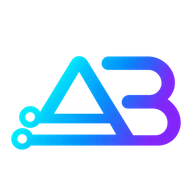
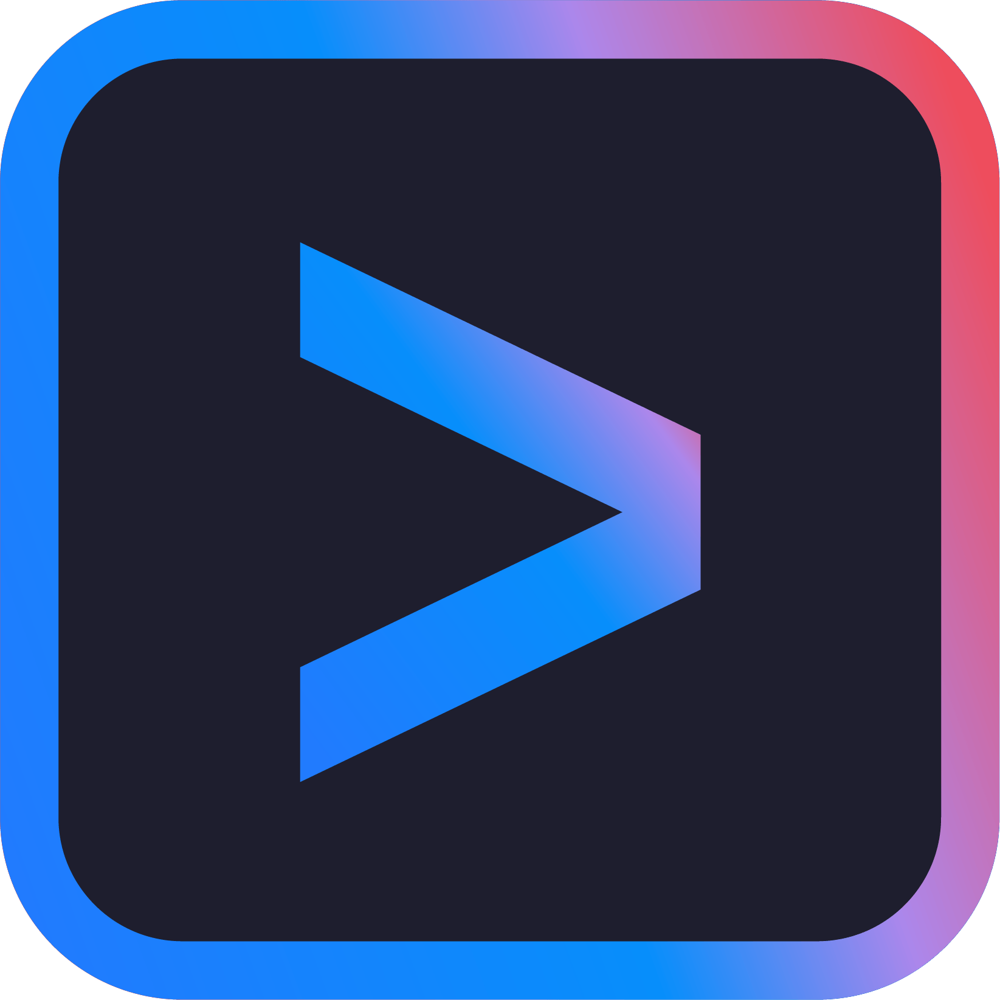

01
Independent sessions. Shared context.
02
A request reaches the right session.
03
One task. An explicit owner.
04
A second session checks the work.
05
The decision stays with the project.

Claude
REQUESTER

Codex
OWNER

Kimi
REVIEWER

Agent Bus
route / persist / coordinate

Gemini CLIEXAMPLE REQUESTReview the change
Sessions connectedRequest queuedClaimed by CodexKimi checks the resultDecision recorded
REQUESTReview the change
OWNERCodex
REVIEWIndependent check
MEMORYDecision + context